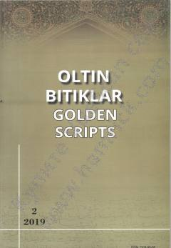

QRQisasi Rabg‘uziy asaridagi folklor namunalari va matnshunoslik tahliliga bag‘ishlangan ilmiy maqola.
Ushbu ilmiy maqola Nosiruddin Rabg‘uziyning mashhur «Qisasi Rabg‘uziy» asarining qo‘lyozma va nashriy nusxalaridagi folklor unsurlarini tahlil qiladi. Muallif asarning kompozitsion tuzilishi, janr xususiyatlari hamda yozma adabiyot va og‘zaki ijod uyg‘unligini ilmiy nuqtai nazardan yoritib beradi.